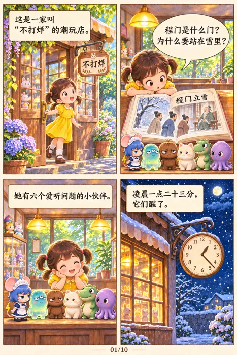

↗
A PERSONAL TOOL COLLECTION
让好用的工具，
安静地陪你创造。
你好，我是姚毛毛。
把日常里的小需要，做成触手可及的工具。
从一首音乐、一个故事，到每一次灵感发生。
独立创作 · 持续生长声音 / 影像 / 文字 / 连接MADE WITH CURIOSITY ↗
THE COLLECTION / 工具集
各有所用，自成一格。
一些已经长大，一些还在发芽。
找到此刻适合你的那一个。
共 8 个工具
↗
REC ▶00:12:08
↗↗
青
灯
↗灯

↗● ● ●
↗~ ssh hello
连接每一种可能 ▌还没找到这个工具。
○ 小提示
每个工具都有独立介绍页。可用项目提供真实的阅读、下载或部署入口，尚在准备的项目展示最新进展。
A NOTE FROM THE MAKER
工具有尽，
好奇心不打烊。
这个网站，把散落在不同文件夹里的想法放在一起。
希望它们能帮你少一点重复，多一点创造，
也为每一个想动手的人，留一点灵感。